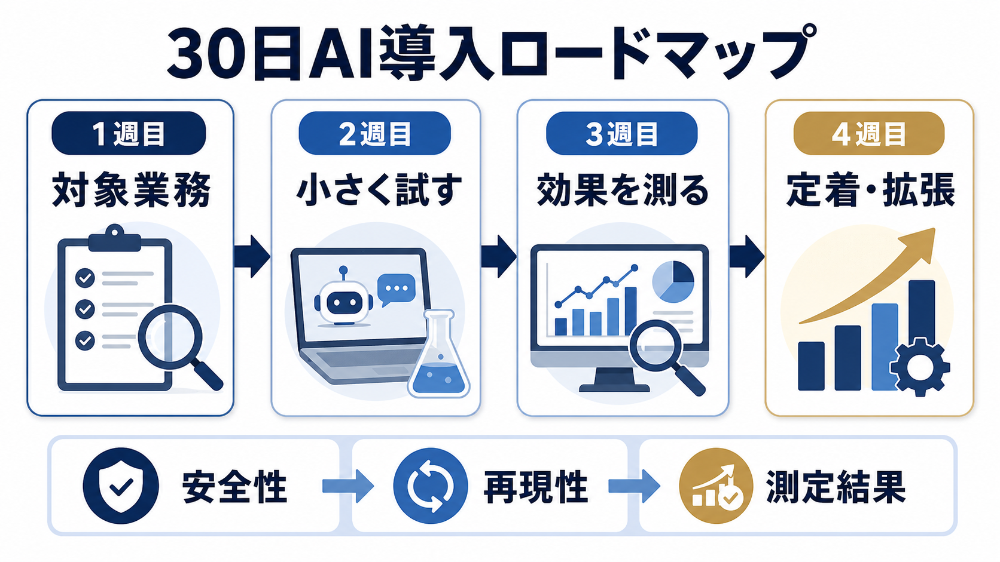

AI IMPLEMENTATION / 30-DAY ROADMAP
中小企業のAI導入の進め方｜いきなり全社展開しない30日ロードマップ
AI導入は、ツールを契約した日から始まるわけではありません。対象業務、確認者、測定方法を決め、小さな試行で自社に合う使い方を見つけるプロセスです。
- 導入の初手はツール選びではなく、対象業務・確認者・測定方法の決定です。
- 最初の30日は、使えるかを判断する試行期間。全社展開の完了を目指しません。
- 安全性・再現性・測定結果の3つがそろった範囲だけ、次の部署や業務へ広げます。

AI導入前に「対象・責任者・測定」を決める
AI導入が止まる原因は、ツールの性能だけではありません。何に使うか、誰が確認するか、成功をどう測るかが曖昧なまま始めると、便利さの感想だけが残ります。中小企業基盤整備機構の2026年3月調査でも、AI導入の阻害要因として高コスト46.9％、社内ノウハウ不足42.0％が挙げられています。最初に次の3つを一枚に書きます。
1つの業務
定型で、入力と出力が確認できる業務を選ぶ。
1人の確認者
公開・送信・登録前に見る担当者を置く。
導入前の数字
時間、回数、ミス、再作業を測る。
候補を探すときは業務効率化のアイデアの3条件も使えます。最初から複雑な判断業務を選ばないことが、導入のスピードを上げます。
中小企業向け30日ロードマップ
| 期間 | やること | 成果物 |
|---|---|---|
| 1〜7日 | 業務の棚卸し、目的、対象データ、確認者を決める | 試行シート・リスク確認 |
| 8〜14日 | 安全なサンプルで試し、出力と修正を記録する | 手順の初稿・事例 |
| 15〜21日 | 現行方法と比較し、時間・品質・再作業を測る | 効果測定表 |
| 22〜30日 | 利用ルール、対象範囲、次の改善を決める | 運用ルール・継続判断 |
この順番なら、試行中に見つかった誤回答や入力禁止情報を、社内利用ルールへ反映できます。
効果は「時間」だけでなく品質と確認負担で測る
AI導入の効果は、作成時間が短くなったかだけで判断しません。出力を確認・修正する時間、差し戻し、顧客への誤送信、利用者が手順を守れたかも含めます。現行方法とAI補助後で、同じ形式の仕事を比較してください。
- 1件あたりの作業時間
- 確認・修正にかかった時間
- 差し戻しや再作業の回数
- 担当者が使い続けられた割合
- 入力禁止情報や例外が発生した回数
金額換算や回収期間まで見たい場合は、AI導入の費用対効果で計算方法を分けて確認します。
定着・拡張は「再現できるか」で判断する
試行がうまくいっても、担当者の経験だけで成立しているなら、全社展開には早すぎます。入力例、プロンプトや手順、確認項目、困ったときの連絡先を残し、別の人でも同じ品質で使えるかを確認します。
拡張するときは、似た業務を1つずつ追加します。部署を一度に増やすのではなく、同じ確認ルールが使える範囲から始めると、教育と監査の負担を抑えられます。
最初のテーマは「確認しやすい定型業務」から選ぶ
最初の試行には、入力と出力が比較的決まっていて、担当者が結果を確認できる業務が向きます。文章の下書き、問い合わせの分類、議事録の整理、社内FAQの検索などは、現行方法とAI補助後を比べやすいテーマです。顧客との最終交渉や採用判断のように、人の判断が中心の業務は、補助範囲を小さく切ります。
| 候補 | 最初に任せる範囲 | 人が確定する範囲 |
|---|---|---|
| 議事録 | 文字起こしの整理、決定事項の候補抽出 | 発言者、決定内容、期限、担当者 |
| 問い合わせ | 質問の分類、FAQ候補の提示 | 回答の正しさ、個別事情、返信送信 |
| 提案書 | 構成案、過去資料の整理、下書き | 価格、契約条件、顧客向け表現 |
この切り分けを先に決めると、「AIに任せるか、任せないか」という二択ではなく、工程ごとの確認責任を設計できます。
失敗したときに戻れる設計を先に置く
AI導入の試行では、誤回答や確認工数の増加が起こります。失敗を隠して継続するのではなく、停止条件と戻し方を決めておくことが重要です。たとえば、誤送信につながる出力、入力禁止情報の混入、現行より確認時間が長い状態が続いた場合は、対象を狭めて手順を修正します。
- 止める：自動送信・自動登録を解除し、人の承認を必須にする。
- 分ける：入力、指示、出力、確認のどこで問題が起きたか記録する。
- 戻す：現行手順へ戻し、修正版を少数のサンプルで再試行する。
- 残す：失敗例と修正理由を手順書・社内ルールへ反映する。
試行を止めることは導入失敗ではありません。原因を特定し、同じ条件で再測定できる状態へ戻せれば、次の判断に使えるデータになります。
30日試行で残すべき記録
試行の成果物は、成功談ではなく、次の人が再現できる作業シートです。対象業務、入力できる情報、使った手順、確認項目、修正例、現行方法との時間差、例外時の戻し先を一枚にまとめます。
| 週 | 残す記録 | 判断に使う問い |
|---|---|---|
| 1週目 | 対象業務と現状工数 | 本当に繰り返しが多いか |
| 2週目 | 入力例と誤り・修正例 | 誰が確認すれば安全か |
| 3週目 | 時間、品質、差し戻し | 現行方法より良くなったか |
| 4週目 | ルールと再現手順 | 別の担当者でも使えるか |
全社展開前に3つのゲートを通す
全社展開は、効果が出たという感想だけで決めません。安全性、再現性、経済性を順に確認します。どれか一つでも未確認なら、対象を広げず、試行範囲の修正へ戻します。
AI導入のリスクで入力・権限・停止条件を確認し、費用対効果で実測値を更新してから、次の部署や業務へ進めます。
30日試行の役割を先に割り当てる
小さな試行でも、業務責任者、利用者、確認者、情報管理の相談先を分けます。1人が全部を持つと、便利さと安全性の判断が混ざり、問題が起きたときに止めにくくなります。
| 役割 | 担当すること | 残すもの |
|---|---|---|
| 業務責任者 | 対象業務と成功条件を決める | 業務シート |
| 利用者 | 現行とAI補助を比べる | 修正例・例外 |
| 確認者 | 公開・送信・登録を承認する | チェック結果 |
| 相談先 | 情報・契約・事故を確認する | ルール改訂 |
継続・停止・再設計の条件を決める
試行の最後に、続ける条件だけでなく、停止や再設計の条件も決めます。確認時間が削減時間を上回る、入力禁止情報が混ざる、利用者が手順を守れない場合は、対象を広げずに業務やルールを見直します。
AI導入は一度の成功で完了しません。社内利用ルールとリスク確認を更新し、次の試行へ学びを渡せることが、30日ロードマップの成果です。
- 中小企業基盤整備機構「中小企業のAI等の利活用に係る実態調査」（2026年3月公表・2026年7月13日確認）
- 経済産業省 AI事業者ガイドライン検討会
- IPA AIの利活用、AIによるDXの推進
週次レビューで試行を修正する
30日間を最後に一度だけ評価すると、どの週で詰まったか分かりません。毎週、作業時間、修正、例外、利用者の困りごとを確認し、翌週の手順へ反映します。
- 第1週は対象と入力範囲
- 第2週は出力と修正箇所
- 第3週は時間と品質
- 第4週は再現性と継続条件
試行の途中で課題が見つかることは失敗ではありません。原因が入力、手順、確認者、ツールのどこにあるかを分け、同じ条件で再度測れる状態に戻すことが大切です。
よくある質問
AI導入に専門部署は必要ですか？
最初の試行に大きな専門部署は必須ではありません。ただし、業務責任者、情報管理の相談先、出力確認者は必要です。外部支援を使う場合も、社内の最終責任者を置きます。
30日で導入完了できますか？
30日で全社展開するのではなく、使えるかを判断する試行を完了させる想定です。業務・契約・データの確認に時間がかかる場合は、期間を延ばして安全性を優先します。
AI導入の対象業務はどう選びますか？
繰り返しが多く、入力と出力が比較的決まっていて、人が結果を確認できる業務から選びます。顧客への最終回答や採用判断など、責任判断が重い業務は、分類や下書きなど補助工程に限定します。
効果が出ないときはどうしますか？
導入を続ける前に、入力、指示、出力、確認のどこで時間や品質が悪化したかを分けます。現行手順へ戻れる状態を保ち、対象範囲を狭めて再測定します。停止条件を決めておくと、感覚で継続せずに済みます。